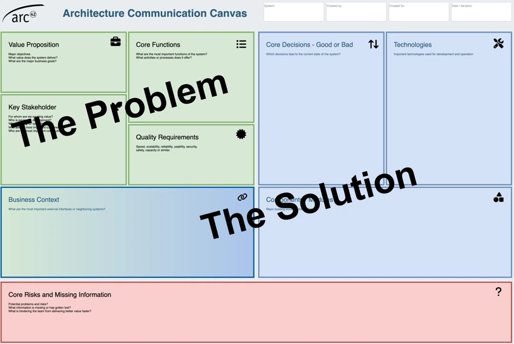

the architecture ecosystem
the architecture ecosystemLearn
Observe technologies, teams, and outcomes.
Architecture work loops
Clarify, design, communicate, implement, review, and learn. The arc42 method connects those recurring tasks instead of prescribing a single process.
Each practice produces or changes architecture knowledge, and each artifact should lead back to a conversation.
Observe technologies, teams, and outcomes.
Make goals, quality, constraints, and risk concrete.
Shape structures, behavior, and concepts.
Put decisions where stakeholders can use them.
Compare intended and actual architecture.
Look again, then change the next decision.
A small artifact with a large job
Use one page when the architecture is still emerging. Capture the problem, drivers, people, risks, and an initial solution, then decide what deserves deeper treatment in the template.
